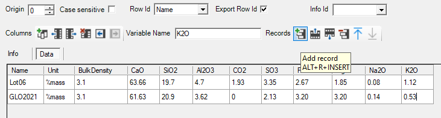

Tutorial - Adapt oxide composition of OPC clinker
Tutorial - Adapt oxide composition of OPC clinker
Description
Calculate the hydrates assemblage and pore water composition of the hydration of 100 g CEM-I with a water/cement ratio of 0.5 and at a temperature of 25°C with the oxide composition as defined in Table 4 in Glosser et al. (2021).
|
SiO2 |
Al2O3 |
CaO |
Fe2O3 |
MgO |
SO3 |
Na2O |
K2O |
|
20.90 |
3.62 |
61.63 |
3.20 |
3.20 |
2.13 |
0.17 |
0.53 |
You will learn to
Add a new clinker oxide composition of OPC to a datablock
Template - Hydrates_00_General
Depends on
Tutorial - Calculate the cement hydrates assemblage and pore water composition
Step 1 – Add the oxide clinker composition to the datablock
Open the simulation that was created in Tutorial Calculate the cement hydrates assemblage and pore water composition via the Project Manager or via the drop down list of previously opened simulations.
Go to Global Definitions
Go to Datablock
Select the data block OPC
The selected data block appears in the bottom panel – new records/row can be added.
Add a new record at the bottom of the table 
Give a name (e.g., GLO2021)
Add the oxide composition

Step 2 – Select, Run and Output
Go to Global Variables
Go to Cement Recipe tab
Select GLO2021 in drop down menu of the Cement::Clinker::Reference$ record
Run the problem 
Check output.
END Calculate the cement hydrates assemblage and pore water composition
Created with the Personal Edition of HelpNDoc: Effortlessly Create High-Quality Help Documentation with a Help Authoring Tool